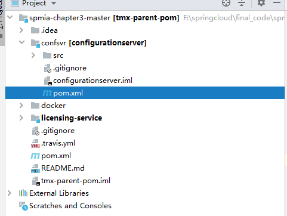
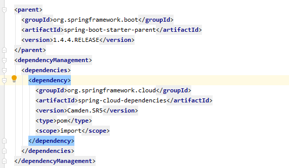
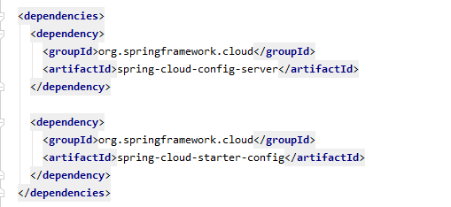
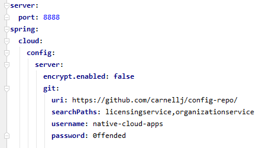
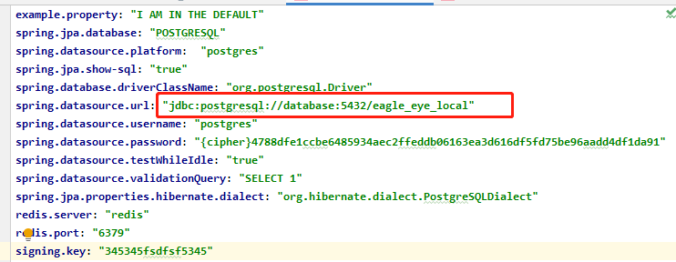
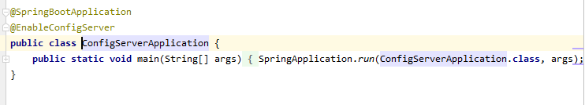
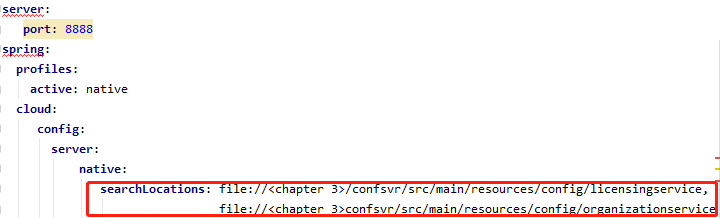
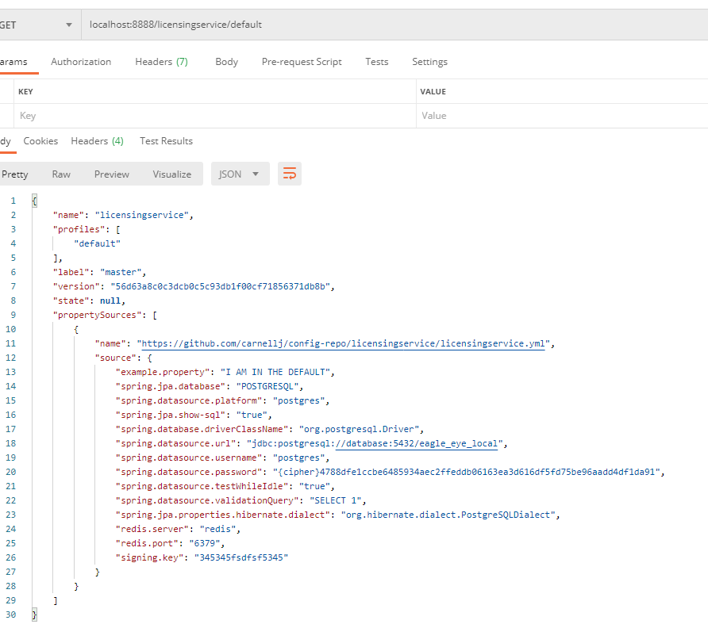

Spring Cloud配置服务器控制配置
云的微服务
1.应用程序的配置与正在部署的实际代码完全分离
2.构建服务器、应用程序以及一个不可变的镜像，在其各自环境中启动后不可变
3.启动时通过环境变量注入应用程序配置，或通过集中式存储库读取应用程序配置
管理配置
遵循四条基本原则
（1）分离，服务配置信息与服务的实际物理部署完全分离
（2）抽象，访问配置数据的功能抽象到一个接口中
（3）集中，配置信息集中在尽可能少的存储库中
（4）稳定，保证高可用和冗余
关键的，配置数据也需要跟踪和版本控制
配置管理概念架构
（1）一个实例启动，调用一个服务端点读取其特定配置信息，配置管理的连接信息将在微服务启动时传递给微服务
（2）实际的配置信息驻留在存储库中
（3）配置数据管理与应用程序的部署方式无关
（4）配置管理更改时，必须通知已经使用该配置的应用程序服务，并刷新应用程序数据的副本
实施选择
| 项目 | 描述 | 特点 |
|---|---|---|
| Etcd | Go开发，服务发现和键值管理，Raft协议 | 非常快、可伸缩 可分布式 命令行驱动 易于搭建和使用 |
| Eureka | Netflix开发，用于服务发现和键值管理 | 分布式键值存储 灵活 设置费劲 开箱即用的动态客户端刷新 |
| Consul | 与上两个类似，SWIM协议 | 快速 本地服务发现，直接与DNS集成，没有开箱即用的动态客户端刷新 |
| ZooKeeper | 提供分布式锁定功能的Apache项目 | 使用最复杂，最古老的，用于配置管理，只有在其他架构中使用了ZooKeeper的时候才考虑使用它 |
| Spring Cloud Config | 开源项目，提供不同后端的通用配置管理解决方案，可将Git、Eureka和Consul作为后端进行整合 | 非分布式，提供对Spring和非Spring集成，多个后端来存储配置数据，包括共享文件系统、Eureka、Consul和Git |
最终选择Spring Cloud配置服务器，原因：
1 | 易于搭建 |
后续工作
- 创建Spring Cloud配置服务器，演示两种机制提供应用程序配置数据，一种是文件系统，另一种使用Git存储库
- 继续构建许可证服务，以从数据库检索数据
- Spring Cloud配置服务挂钩（hook）到许可证服务，以提供应用程序的配置数据
构建Spring Cloud配置服务器
建立在SpringBoot之上而不是独立的服务器

如图，新建confsvr项目目录，其中pom.xml的maven文件用于拉取启动配置服务器所需的JAR

1 | <dependencyManagement>用于声明依赖版本，而非引入依赖，其子模块通过<dependencies>引入依赖时按照该声明选择依赖的版本，即声明的依赖为父物料清单(BOM),而不必为子依赖项声明版本号 |
上图确定了Springboot和SpringCloud的版本

上图实现了子依赖引入，但为声明版本，版本继承自BOM
然后通过创建application.yml端口信息以及从哪里找到用于提供配置信息的后端

然后需要将服务器指向保存配置数据的后端存储库
为3个环境创建配置数据：默认环境、开发环境、生产环境
需要为每个环境提供一个属性文件，文件包含：
- 许可证服务直接使用的数学
- 存储许可证服务数据的Postgres数据库配置

该配置服务器使得环境名称直接转换为URL
1 | 应用程序名称-环境名称.yml，将其公开为基于HTTP的端点 |
大型云应用不推荐文件系统，而推荐Git方式配置存储库，因为共享文件系统服务器需要人员维护
创建Spring Cloud Config引导类
@EnableConfigServer使服务成为Spring Cloud Config服务

使用带有文件系统的Spring Cloud配置服务器
在application.yml中配置存储库

路径为配置文件路径
浏览器访问localhost:8888/licensingservice/default看到licensingservice.yml中的所有属性

如果想看licensingservice-dev.yml，访问localhost:8888/licensingservice/dev即可
将Spring Cloud Config与Spring Boot客户端集成
许可证服务（客户端）启动，通过命令行传递两条信息：
1.Spring的profile
2.服务与Spring Cloud配置服务通信的端点 （http://localhost:888）
根据给定URI，使用已配置的后端配置存储库检索相应配置，然后将相应配置属性传回许可证服务
对Spring Cloud Config服务器的依赖
1 | <dependency> |
客户端添加这些依赖用于作为JPA包、SpringCloud的客户端以及数据库驱动
配置许可证服务以使用Spring Cloud Config
然后需要告知许可证服务在哪里与Spring Cloud配置服务器进行联系
根据bootstrap.yml和application.yml两者之一进行配置
这里选择bootstrap用于配置Spring Cloud Config
而application.yml用于本地配置
1 | spring: |
可以通过修改启动参数来覆盖这些配置
1 | java -Dspring.cloud.config.uri = http://localhost:8888 \ |
通过-D系统属性来覆盖
如果想要覆盖配置服务器中的配置，则需要启动VM实例或Docker容器并传入环境变量
docker-compose.yml中
1 | licensingservice: |
然后便可在docker的run.sh中调用这些环境变量以启动
1 | !/bin/sh |
通过http://localhost:8080/env来获取有关服务的所有配置信息
但有组织认为，这个端点太危险，因为暴露了太多信息，如何实现安全策略可参考《Spring Boot 实战》
使用Spring Cloud配置服务器连接数据源
在许可证微服务中构建数据库连接相关的model、Service和Repository
odel用于构造JPA模型,以便Repository执行sql语句前后的映射和注入
Service用于业务逻辑实现
Repository根据JPA实现基于名称的SQL语句
使用@Value注解直接读取属性
通过@Value可将数据库配置数据直接注入到对象当中
1 |
|
通过getExampleProperty方法可直接获取该数据
使用Spring Cloud配置服务器和Git
将文件系统改为Git
1 | server: |
使用Spring Cloud配置服务器刷新属性
Spring Boot Actuator提供了@RefreshScope注解，允许开发团队访问/refresh端点，强制应用重新读取配置
1 |
|
1 | 同一服务的多个实例，需要刷新所有这些服务，以下有三种方案： |
保护敏感配置信息
（1）下载并安装加密所需的Oracle JCE jar
（2）创建加密秘钥
（3）加密和解密属性
（4）配置微服务以在客户端使用加密
下载安装Oracle JCE jar
将$JAVA_HOME/jre/lib/security目录中的local_policy.jar和US_export_policy.jar备份到其他位置
下载JCE Zip
解压并将local_policy.jar和US_export_policy.jar复制到$JAVA_HOME/jre/lib/security目录中
配置加密
1 | 这里dockerfile已经通过curl拉取了JCE的zip，并将jar包复制到Docker容器中/usr/lib/jvm/java-1.8-openjdk/jre/lib/security目录下 |
创建加密秘钥
1 | export ENCRYPT_KEY=IMSYMMETRIC |
1 | 实际环境，应为每个环境使用单独加密密钥 |
加密和解密
端点/encrypt和/decrypt分别可以加密或解密属性
直接在Github或文件系统的配置文件中使用
1 | spring.datasource.password:"{cipher}加密字符串" |
{cipher}使得Spring Cloud服务器处理该加密的值，从而直接在/licensingservice/default得到了明文信息
配置微服务以在客户端使用加密
1.不要在服务器端解密属性
2.在许可证服务器（微服务）上设置对称密钥
3.将spring-security-rsa JAR添加到许可证服务的pom.xml文件中
首先禁用服务器端的解密
1 | spring: |
然后在许可证服务的配置文件上设置对称密钥，使得ENTRYPT_KEY环境变量与Spring Cloud Config服务器上使用的对称密钥相同
接着增加spring-security-rsa依赖
然后便可以观察到敏感属性不再以未加密形式返回，相反该属性将由调用服务解密
Spring Cloud配置服务器控制配置
install_url to use ShareThis. Please set it in _config.yml.